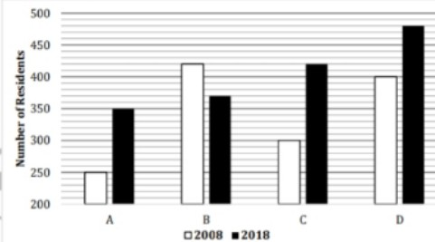

निर्देश : दिए गए प्रश्न में प्रश्नवाचक चिह्न (?) के स्थान पर लगभग क्या मान आएगा? (आपसे सटीक मान की गणना करने की अपेक्षा नहीं की जाती है) √(124+? +169) = 18 A) 34 B) 31 C) 33 D) 35 E) 32 .
निर्देश : दिए गए प्रश्न में प्रश्नवाचक चिह्न (?) के स्थान पर लगभग क्या मान आएगा? (आपसे सटीक मान की गणना करने की अपेक्षा नहीं की जाती है) 136 ÷ 2^2 ×?= 17% of 500 ÷ 10 A) 0.75 B) 1.33 C) 0.25 D) 1.66 E) 0.5 .
निर्देश : दिए गए प्रश्न में प्रश्नवाचक चिह्न (?) के स्थान पर लगभग क्या मान आएगा? (आपसे सटीक मान की गणना करने की अपेक्षा नहीं की जाती है) 115 ÷ 5 + 12 × 6 =? +64 ÷ 4 − 35 A) 114 B) 118 C) 108 D) 116 E) 111 .
निर्देश : दिए गए प्रश्न में प्रश्नवाचक चिह्न (?) के स्थान पर लगभग क्या मान आएगा? (आपसे सटीक मान की गणना करने की अपेक्षा नहीं की जाती है) 41% of 600 − 250 =? −77% of 900 A) 693 B) 675 C) 684 D) 679 E) 689 .
निर्देश : दिए गए प्रश्न में प्रश्नवाचक चिह्न (?) के स्थान पर लगभग क्या मान आएगा? (आपसे सटीक मान की गणना करने की अपेक्षा नहीं की जाती है) 360/? = 73 + 3^3 A) 3.4 B) 4.3 C) 3.1 D) 3.6 E) 3.9 .
निर्देश (46 – 50): दिया गया बार ग्राफ वर्ष 2008, 2018 में 4 सोसाइटी में रहने वाले निवासियों की संख्या दर्शाता है। पढ़ें डेटा को ध्यान से देखें और सवालों के जवाब ध्यान से दें?  2008 में सोसाइटी A, 2018 में B, 2018 में C और 2008 में D में रहने वाले निवासियों का औसत कितना है? A) 355 B) 360 C) 365 D) 370 E) 350 .
निर्देश (46 – 50): दिया गया बार ग्राफ वर्ष 2008, 2018 में 4 सोसाइटी में रहने वाले निवासियों की संख्या दर्शाता है। पढ़ें डेटा को ध्यान से देखें और सवालों के जवाब ध्यान से दें? 2008 में सोसाइटी B में रहने वाले निवासी, 2008 और 2018 में सोसाइटी D में रहने वाले निवासियों के औसत से कितने प्रतिशत अधिक/कम हैं? A) 5(6/11)% B) 3(6/11)% C) 6(6/11)% D) 7(6/11)% E)4(6/11)% .
निर्देश (46 – 50): दिया गया बार ग्राफ वर्ष 2008, 2018 में 4 सोसाइटी में रहने वाले निवासियों की संख्या दर्शाता है। पढ़ें डेटा को ध्यान से देखें और सवालों के जवाब ध्यान से दें? कौन सा समाज संख्या में अधिकतम प्रतिशत वृद्धि दर्शाता है। वर्ष 2008 से 2018 तक के निवासियों की संख्या? A) Both A & C B) Both A & D C) Both C & D D) Both A & B E) None of these .
निर्देश (46 – 50): दिया गया बार ग्राफ वर्ष 2008, 2018 में 4 सोसाइटी में रहने वाले निवासियों की संख्या दर्शाता है। पढ़ें डेटा को ध्यान से देखें और सवालों के जवाब ध्यान से दें? 2008 में सभी समाजों में सभी निवासियों का अनुपात 2018 में कितना है? A) 142 : 157 B) 157 : 142 C) 162 : 137 D) 137 : 162 E) 97 : 114 .
निर्देश (46 – 50): दिया गया बार ग्राफ वर्ष 2008, 2018 में 4 सोसाइटी में रहने वाले निवासियों की संख्या दर्शाता है। पढ़ें डेटा को ध्यान से देखें और सवालों के जवाब ध्यान से दें? 2018 में सोसाइटी A और B में एक साथ रहने वाले निवासियों की संख्या और 2008 में सोसाइटी C और D में एक साथ रहने वालों की संख्या के बीच कितना अंतर है? A) 30 B) 24 C) 20 D) 28 E) 26 .
एक दुकानदार दो पेन बेचता है, उसने एक पेन लाभ पर तथा दूसरा पेन हानि पर बेचा। दो पेनों में से प्रत्येक का एसपी 300 रुपये है और एक पेन पर लाभ प्रतिशत दूसरे पेन पर हानि प्रतिशत के बराबर है। यदि दुकानदार की कुल हानि 6.25% है, तो दोनों की लागत मूल्य के बीच अंतर ज्ञात कीजिए A) Rs.350 B) Rs.100 C) Rs.240 D) Rs.160 E) Rs.300 .
एक आदमी को 3456 रुपये प्राप्त हुए जब उसने 12% प्रति वर्ष पर रुपये का निवेश किया। एसआई में 3 साल के लिए। यदि उसने 15% वार्षिक दर पर रु. (P+4400) का निवेश किया। सीआई में 2 साल तक सालाना कंपाउंडिंग होती है, तो उसके द्वारा प्राप्त ब्याज ज्ञात कीजिये। A) Rs.4515 B) Rs.4960 C) Rs.4725 D) Rs.4185 E) Rs.4345 .
एक नाव द्वारा धारा के अनुकूल और धारा के प्रतिकूल प्रत्येक 162 किमी की दूरी तय करने में 14 घंटे और 24 मिनट का समय लगता है। यदि धारा की गति 6 किमी/घंटा है, तो धारा के प्रतिकूल 240 किमी की दूरी तय करने में नाव द्वारा लिया गया समय ज्ञात कीजिए। A) 7(1/3) hours B) 18(2/3) hours C) 9(1/3) hours D) 16(2/3) hours E) 13(1/3) hours .
C, B से 100% अधिक कुशल है। A अकेले किसी काम को 9 दिनों में पूरा कर सकता है और B और C मिलकर उसी काम को 2(2/3) दिनों में पूरा कर सकते हैं। ज्ञात कीजिए कि यदि A और B 4 दिनों तक एक साथ कार्य करते हैं तो कार्य का कितना भाग पूरा हो जाएगा। A) 13/18 B) 8/9 C) 5/6 D) 2/3 E) 17/18 .
P की 2 वर्ष पहले की आयु और R की 2 वर्ष बाद की आयु का अनुपात 1:2 है और Q की वर्तमान आयु P की वर्तमान आयु से 25% अधिक है। यदि P और R की वर्तमान आयु का औसत 39 वर्ष है, तो 5 वर्ष बाद P की आयु और R की वर्तमान आयु के बीच अंतर ज्ञात कीजिए। A) 12 years B) 17 years C) 21 years D)15 years E) 14 years .
दिशानिर्देश (56-60): निम्नलिखित द्विघात समीकरण को हल करें और निर्देशों के अनुसार उत्तर चिह्नित करें। I. x^2 − 2x − 143 = 0 II. y^2 − 169 = 0 A) x > y B) x < y C) x ≤ y D) x ≥ y E) x = y or no relation can be established .
दिशानिर्देश (56-60): निम्नलिखित द्विघात समीकरण को हल करें और निर्देशों के अनुसार उत्तर चिह्नित करें। I. x^2 − 7x − 18 = 0 II. y^2 − 19y + 90 = 0 A) x > y B) x < y C) X ≤ y D) x ≥ y E) x = y or no relation can be established .
दिशानिर्देश (56-60): निम्नलिखित द्विघात समीकरण को हल करें और निर्देशों के अनुसार उत्तर चिह्नित करें। I. 2x^2 + 5x + 3 = 0 II. y^2 + 4y − 12 = 0 A) x > y B) x < y C) x ≤ y D) x ≥ y E) x = y or no relation can be established .
दिशानिर्देश (56-60): निम्नलिखित द्विघात समीकरण को हल करें और निर्देशों के अनुसार उत्तर चिह्नित करें। I. 9x + 3y = 15 II. 4x + 5y = 14 A) x > y B) x < y C) x ≤ y D) x ≥ y E) x = y or no relation can be established .
दिशानिर्देश (56-60): निम्नलिखित द्विघात समीकरण को हल करें और निर्देशों के अनुसार उत्तर चिह्नित करें। I. 2x^2 − x − 1 = 0 II. 3y^2 − 5y + 2 = 0 A) x > y B) x < y C) x ≤ y D) x ≥ y E) x = y or no relation can be established .
दिशा-निर्देश (61-65): निम्नलिखित संख्या श्रृंखला में गलत संख्या ज्ञात कीजिए। 2, 3, 6, 15, 45, 156.5, 630 A) 2 B) 15 C) 3 D) 156.5 E) 630 .
दिशा-निर्देश (61-65): निम्नलिखित संख्या श्रृंखला में गलत संख्या ज्ञात कीजिए। 36, 20, 12, 8, 6, 5.5, 4.5 A) 8 B) 36 C) 5.5 D)4.5 E) 6 .
दिशा-निर्देश (61-65): निम्नलिखित संख्या श्रृंखला में गलत संख्या ज्ञात कीजिए। 1, 3, 9, 31, 128, 651, 3913 A) 31 B) 3 C) 1 D)3913 E) 128 .
दिशा-निर्देश (61-65): निम्नलिखित संख्या श्रृंखला में गलत संख्या ज्ञात कीजिए। 2, 3, 10, 40, 172, 885, 5346 A) 40 B) 885 C) 172 D) 3 E) 10 .
दिशा-निर्देश (61-65): निम्नलिखित संख्या श्रृंखला में गलत संख्या ज्ञात कीजिए। 5, 8, 16, 26, 50, 98, 194 A) 5 B) 194 C) 8 D) 16 E) 98 .
3 मीटर चौड़ाई का एक आयताकार पथ बगीचे के चारों ओर है जिसकी लंबाई इसकी चौड़ाई से 3 मीटर अधिक है। यदि 0.5Rs/m² की दर से पथ को पेंट करने की लागत 273 रुपये है तो बगीचे का क्षेत्रफलक्या है। A) 1525m² B) 1804 m² C) 1776 m² D) 1906 m² E) 1664 m² .
एक कक्षा में परीक्षा उत्तीर्ण करने वाले छात्रों का प्रतिशत 60% है और परीक्षा उत्तीर्ण करने वाले लड़कों और लड़कियों की संख्या समान है। यदि परीक्षा में असफल होने वाले लड़कों की संख्या परीक्षा में असफल होने वाली लड़कियों की तुलना में 200% अधिक है, तो कुल छात्रों में से असफल होने वाली लड़कियों का प्रतिशत ज्ञात कीजिए। A) 9% B) 13% C)10% D) 12% E) 15% .
एक आदमी ने 15% प्रति वर्ष की दर से X रुपये का निवेश किया। 4 साल के लिए एसआई पर और रु. (1.35X) 18% प्रति वर्ष की दर से। एसआई में 3 साल के लिए। यदि मनुष्य को प्राप्त कुल ब्याज 15948 रुपये है, तो रुपये का मूल्य (3.12X) ज्ञात कीजिए। A) Rs.50544 B) Rs.42764 C) Rs.32580 D) Rs.47372 E) Rs.37440 .
एक आदमी 6(1/4)% दूरी बस के माध्यम से 80 किमी/घंटा की गति से, 25% दूरी कार के माध्यम से 120 किमी/घंटा की गति से, 30% दूरी साइकिल के माध्यम से 32 किमी/घंटा की गति से तय करता है। और शेष दूरी ट्रेन के माध्यम से 62 किमी/घंटा पर। यदि मनुष्य द्वारा तय की गई कुल दूरी 640 किमी है, तो पूरी यात्रा के दौरान मनुष्य द्वारा लिया गया कुल समय ज्ञात कीजिए। A) 65/6 hours B) 13 hours C) 44/3 hours D) 31/2 hours E) 71/6 hours .
एक कक्षा का औसत वजन 60 किग्रा है और कक्षा में लड़कों का औसत वजन 80 किग्रा है। कक्षा में लड़कों और लड़कियों का अनुपात 5: 4 है। यदि कक्षा में 72 छात्र हैं, तो कक्षा में लड़कियों का औसत वजन ज्ञात करें। A) 54 kg B) 42 kg C) 35 kg D) 45 kg E) 38 kg .
एक दुकानदार सप्ताह के अलग-अलग दिनों में दो प्रकार के प्रिंटर अर्थात इंकजेट और लेजर बेचता है। नीचे दिया गया पाई चार्ट संबंधित दिनों में बेचे गए प्रिंटर की कुल संख्या का वितरण प्रतिशत या डिग्री माप में या वास्तविक मूल्य में दर्शाता है। सोमवार से शुक्रवार तक दुकानदार द्वारा बेचे गए प्रिंटरों की कुल संख्या है A) 3300 B)3240 C) 3260 D) 3160 E)3120 .
एक दुकानदार सप्ताह के अलग-अलग दिनों में दो प्रकार के प्रिंटर अर्थात इंकजेट और लेजर बेचता है। नीचे दिया गया पाई चार्ट संबंधित दिनों में बेचे गए प्रिंटर की कुल संख्या का वितरण प्रतिशत या डिग्री माप में या वास्तविक मूल्य में दर्शाता है। सोमवार को बिकने वाले इंकजेट प्रिंटर और लेजर प्रिंटर की संख्या का अनुपात क्रमश: 7:5 है. और गुरुवार को बेचे जाने वाले प्रिंटर का 60% लेजर प्रिंटर है। इन दो दिनों में बेचे गए इंकजेट प्रिंटरों की कुल संख्या ज्ञात कीजिए A) 612 B) 550 C) 530 D) 440 E) None of these .
एक दुकानदार सप्ताह के अलग-अलग दिनों में दो प्रकार के प्रिंटर अर्थात इंकजेट और लेजर बेचता है। नीचे दिया गया पाई चार्ट संबंधित दिनों में बेचे गए प्रिंटर की कुल संख्या का वितरण प्रतिशत या डिग्री माप में या वास्तविक मूल्य में दर्शाता है। रविवार को बेचे गए प्रिंटरों की कुल संख्या मंगलवार को बेचे गए प्रिंटरों की संख्या से 37.5% अधिक है, जबकि रविवार को बेचे गए लेजर प्रिंटरों की संख्या शुक्रवार को बेचे गए प्रिंटरों की कुल संख्या का 5.88% है। रविवार को बिकने वाले इंकजेट प्रिंटरों की संख्या है. A) 651 B) 180 C) 823 D) 1000 E) 785 .
एक दुकानदार सप्ताह के अलग-अलग दिनों में दो प्रकार के प्रिंटर अर्थात इंकजेट और लेजर बेचता है। नीचे दिया गया पाई चार्ट संबंधित दिनों में बेचे गए प्रिंटर की कुल संख्या का वितरण प्रतिशत या डिग्री माप में या वास्तविक मूल्य में दर्शाता है। बुधवार को बेचे गए इंकजेट और लेजर प्रिंटर की संख्या का अनुपात क्रमश: 17:15 है जबकि गुरुवार को यह क्रमश: 23:25 है। इन दो दिनों में बेचे गए लेजर प्रिंटर की औसत संख्या है. A) 850 B) 565 C) 550 D) 280 E) 660 .
एक दुकानदार सप्ताह के अलग-अलग दिनों में दो प्रकार के प्रिंटर अर्थात इंकजेट और लेजर बेचता है। नीचे दिया गया पाई चार्ट संबंधित दिनों में बेचे गए प्रिंटर की कुल संख्या का वितरण प्रतिशत या डिग्री माप में या वास्तविक मूल्य में दर्शाता है। यदि मंगलवार, सोमवार और गुरुवार को बेचे गए प्रिंटरों की कुल संख्या को एक पाई चार्ट में दर्शाया जाता है, तो गुरुवार को बेचे गए पिंटरों की संख्या से बना केंद्रीय कोण. A) 96° B) 90° C) 126° D) 36° E) 72° .